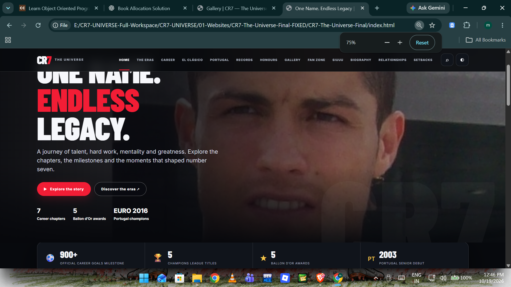

ONE NAME.ENDLESS LEGACY.
A journey of talent, hard work, mentality and greatness. Explore the chapters, the milestones and the moments that shaped number seven.
The seven eras
From a teenage talent in Lisbon to a global football icon—open each chapter for its story and context.
Sporting CP
The first spark
Explore chapter ↗Manchester United
The Red Devil rises
Explore chapter ↗Real Madrid
A goal machine in white
Explore chapter ↗Juventus
A new challenge
Explore chapter ↗Manchester United — Return
The return
Explore chapter ↗Al Nassr
A global stage
Explore chapter ↗Portugal
Forever Portugal
Explore chapter ↗More than numbers
Explore the career through context: work ethic, tactical evolution, national pride, records and honours.
Built by repetition.
Proven on the pitch.
Follow the turning points, training reputation, adaptation and resilience behind the public milestones.
Open the origin story ↗El Clásico:
pressure and precision.
Look at the rivalry era, transition runs, aerial threat and finishing patterns without reducing football to a single statistic.
Explore the rivalry ↗
✦Greatness is a long game: preparation, adaptation, recovery and the courage to keep trying.
A fan editorial perspective · not a Ronaldo quotationReady to shout SIUUU?
Take the ten-question quiz or visit the dedicated celebration page.